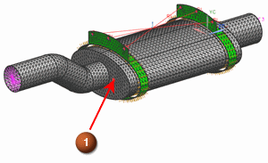
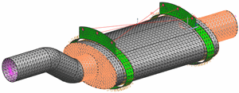

创建瞬态耐久性事件
 瞬态耐久性事件(耐久性工具条)
瞬态耐久性事件(耐久性工具条)
已检测到现有的瞬态解算方案—SOL 109，并将它显示在瞬态解算方案列表中。
已检测到现有的子工况—直接瞬态 1，并将它显示在瞬态解算方案子工况列表中。
-
强度
-
Strength 1

-
疲劳
-
Fatigue transient
-
轴搜索
-
Axis Search transient
-
数据控制
-
确保抽样优化阶次是设置为1。
抽样优化阶次值将控制用在耐久性评估中的应力/应变数据点个数，默认抽样优化阶次为1，表示将使用全部数据点，值为2表示使用其中一半的点。
-
解算选项
- 创建解算选项
-
名称
Solve Options transient
-

选择
(位于使用单元下方)
-
方法
按组显示单元

提示
方法下拉菜单 位于工具条区域的选择条上。
-

 位于如下所示面上的任意单元。
位于如下所示面上的任意单元。
将有1721个单元被选中，这些单元位于 Joint 组中。

-
确定
所有对话框
|
|
|
|
|
|
|
|
 耐久性 1
耐久性 1

 静态事件 1
静态事件 1
 ForceExt+Z
ForceExt+Z